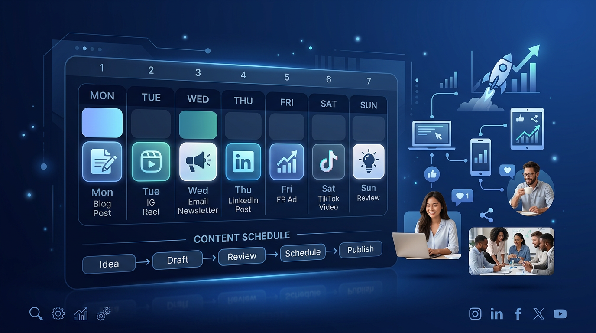

Key Takeaway: A marketing calendar isn't about creativity — it's about consistency. The businesses that win are those with a system that runs whether they feel inspired or not.
The average small business owner tries to "figure out what to post" in real time. They wake up on a Tuesday, stare at a blank screen, post something vague, and wonder why it doesn't work. Then they go quiet for two weeks.
This is not a content problem. It's a systems problem.
The businesses growing through content marketing aren't necessarily creating better content. They're creating it consistently, on a schedule, with a clear purpose for each piece. That consistency is what the algorithm rewards. It's what audiences expect. And it's what Google indexes.
Here's the exact marketing calendar system that works for time-constrained SMB owners.
Why Most SMB Marketing Fails (It's Not Creativity)
Content marketing failure is almost never a talent problem. The businesses that go quiet aren't out of ideas — they're out of bandwidth and structure.
Without a calendar, every piece of content is a decision. Should I post today? What should I post? On which platform? What's the point of this post? These micro-decisions drain cognitive energy. When you're running a business, this energy quickly runs out.
A calendar eliminates those decisions in advance. You've already decided what type of content runs on which day. You've pre-decided the theme for the month. You batch-create content in a single weekly session instead of fragmenting your attention daily.
The result: marketing that actually keeps running when things get busy.
The Four Content Pillars Every SMB Needs
Before building the calendar, you need the pillars. Every piece of content you create should fall into one of these four categories:
Pillar 1 — Education: Content that makes your audience smarter. How-to guides, frameworks, data breakdowns. This builds authority and gets shared. Example: "7 Ways to Get B2B Leads Without Paid Ads."
Pillar 2 — Social Proof: Case studies, results, testimonials. This builds trust. It answers the "but does it actually work?" question that stops prospects from buying. Example: "0 to 346 Leads in 19 Days."
Pillar 3 — Objection Handling: Content that directly addresses the reasons prospects don't buy. "Too expensive," "too complicated," "not sure if it works for my industry." Naming these objections and answering them pre-empts them in the sales conversation.
Pillar 4 — Direct CTA: Content with a specific call to action. Not every post should sell, but some should. A clear, direct invitation to try your product, book a call, or read more. No vague "learn more" — a specific offer.
A healthy content mix rotates through all four pillars. If you're only doing education, you're not converting. If you're only doing CTAs, you're not building. The calendar enforces the mix.
The Weekly Marketing Calendar
This is the core system. One week, five days, clearly mapped. Each day has a purpose, a platform, and a content type. This runs on repeat every week.
| Day | Channel | Content Type | Pillar |
|---|---|---|---|
| Monday | Blog + LinkedIn + FB | Long-form blog post + social distribution | Education |
| Tuesday | Text post — insight or framework | Education | |
| Wednesday | Instagram + Facebook | Reel or visual carousel | Social Proof |
| Thursday | LinkedIn + Facebook | Case study or results post | Social Proof |
| Friday | Email + LinkedIn | Weekly newsletter + CTA post | Direct CTA |
Monday: Publish and Distribute
Monday is your content anchor day. Publish one long-form blog post (800-1,200 words, SEO-optimised for a buyer-intent keyword). Then immediately distribute it: post the blog URL on Facebook with a compelling caption, share a LinkedIn text post pulling out the single best insight from the post.
Why Monday? Your audience is in planning mode. They're receptive to educational content that helps them think about the week ahead. Publishing Monday also gives Google 5 full business days to crawl and begin indexing before the week ends.
Time investment: 2-3 hours if writing manually. Under 30 minutes if using AI-assisted drafting.
Tuesday: LinkedIn Authority Post
Tuesday is LinkedIn's peak engagement day for B2B content. Use it for a pure text post — no links, no images. Just a direct insight, framework, or contrarian take written from your own perspective.
The format that works best on LinkedIn: start with a single bold statement, break the body into short paragraphs or a numbered list, end with a question or a soft CTA. Keep it under 250 words. No clickbait — give the value in the post itself, don't hold it hostage behind a link.
Example opener: "Most B2B founders think they have a lead generation problem. They don't. They have a follow-up problem."
Time investment: 20-30 minutes for a strong post.
Wednesday: Mid-Week Visual
Wednesday is your visual content day. Publish a Reel or carousel on Instagram and Facebook. Video consistently outperforms static posts for reach — Instagram Reels get 22% more engagement than regular posts, and Facebook Reels are shown to non-followers, expanding your reach.
The content theme for Wednesday: social proof. A customer result, a before/after, a stat from your business. Keep it under 45 seconds for video. Three to five slides for carousel.
One rule: every Reel needs a voiceover. Silent reels are dead reels. Background music plus narration is the minimum viable production quality — this is directly from client feedback on what works and what doesn't.
Time investment: 1-2 hours to produce manually. Automated with a video generation service: under 5 minutes.
Thursday: Social Proof and Case Study
By Thursday, your audience has absorbed your Monday education post and Tuesday insight. Now they want to know: does this actually work? Thursday is social proof day.
Post on LinkedIn and Facebook with a specific result. Not "we help businesses grow" — something specific: "A consulting firm we work with went from 0 inbound leads to 12 per month in 90 days using this exact content system."
Specific numbers are scroll-stoppers. Vague claims are ignored. If you have a real case study, use it. If you're early-stage, share your own results or a process that generated a measurable outcome.
Time investment: 20-30 minutes.
Friday: CTA and Weekly Newsletter
Friday is the day to ask. Your audience has received four days of value — now you can make a direct offer without it feeling pushy.
On LinkedIn: a direct invitation. "If you want help building this system for your business, here's where to start." With a link.
Via email: a weekly newsletter recapping the week's content — three sentences max on each piece — with a clear CTA at the bottom. Keep the newsletter short. One scroll. The goal is to be the best thing in their inbox on Friday afternoon, not the longest.
Why email matters: Social platforms can derank or deprioritise your content. Your email list is an asset you own. Every week of consistent email builds a relationship with subscribers that no algorithm can take away.
The Monthly Content Theme System
The weekly calendar runs on a monthly theme. Each month, pick one core problem your ICP faces. Every piece of content that month connects back to that theme.
Example monthly theme: "How to generate leads without hiring a marketing team."
- Week 1 blog: "7 Organic Lead Generation Strategies That Don't Require Paid Ads"
- Week 2 blog: "How to Automate Your Lead Generation Without a Marketer"
- Week 3 blog: "AI vs. Hiring: The Real Cost Comparison"
- Week 4 blog: "Case Study: 346 Leads in 19 Days Without a Sales Team"
When all content in a month points to the same theme, the SEO authority compounds. Google sees you as an authority on that topic. Visitors see consistent, coherent messaging. Prospects understand exactly what you solve.
Automating This So You Don't Have To Do It Manually
Here's the honest truth: this calendar — done manually — takes 8-12 hours per week. That's unrealistic for a founder running a business.
The businesses executing this consistently aren't doing it manually. They're either:
- Paying a content agency $3,000-8,000/month to run it for them
- Using an autonomous AI marketing agent to run the entire system automatically
Option 2 costs $499/month. It produces the same calendar — blogs, LinkedIn posts, social content, email newsletters, Reels — running on autopilot, without your involvement beyond a quick weekly review.
The marketing calendar is the strategy. AI is the execution. You focus on the business.
Want this calendar running on autopilot?
AgentGrow's autonomous AI CBO executes this exact weekly calendar for your business — blog posts, social content, LinkedIn, email, and Reels — without any manual work from you. Start a free 7-day trial and see it in action.
Start Your Free 7-Day Trial →Frequently Asked Questions
How often should a small business post on social media?
For most small businesses, posting 4-5 times per week on LinkedIn and 5-7 times per week on Facebook and Instagram is the right frequency. Quality matters more than quantity, but consistency beats both. A post every weekday on LinkedIn generates 3-5x more profile views and follower growth than posting irregularly, even if the irregular posts are higher quality.
What is the best day to post on LinkedIn for B2B?
Tuesday through Thursday between 8-10am and 12-2pm in your target audience's timezone consistently produce the highest engagement for B2B LinkedIn content. Monday mornings and Friday afternoons are the lowest performers. However, the most important variable is consistency — posting at the same time on the same days builds audience expectation and algorithmic momentum.
How do you create a marketing calendar for a small business?
A practical SMB marketing calendar starts with themes: one core topic per month, broken into weekly content pillars (education, case study, objection handling, community). Then map content types to platforms: long-form blog for SEO, short-form adaptation for LinkedIn, visual for Instagram, video for Reels and Shorts. Schedule 4 weeks ahead and batch-create content in one weekly session rather than creating daily.
What content performs best for B2B businesses on social media?
For B2B businesses, the highest-performing content types are: data-backed insights (specific numbers and statistics), frameworks and processes (how-to systems), contrarian takes on common beliefs, and results-focused case studies. Avoid vague inspiration content and company news — decision-makers follow people and brands that make them smarter or give them usable tools.
How do I maintain a consistent marketing calendar without a full-time marketer?
The key is systems over willpower. Batch-create content once per week (Sunday or Monday), schedule it all at once, and automate distribution. AI tools can generate draft content from topic briefs in minutes, reducing the weekly creation session to 1-2 hours instead of 10+. Alternatively, an autonomous AI agent handles the entire calendar automatically — content creation, scheduling, posting, and repurposing — without manual input.